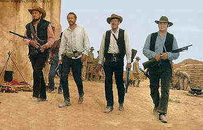

DVD Review Archive
Feature Archive Links DVD MIA DVD
Alerts Movie Posters Laser Site Info Home E-mail
© 2002 Films on Disc Stuart J. Kobak ALL RIGHTS RESERVED.
|
|
LASER
I just love The Wild Bunch. The violent images are presented on the screen with such artistic style that they almost sing. The sense of desperate abandon that follows the bunch to their seminal ballet of bullets is nothing short of fantastic. Extensive slow motion camera work is used to astonishing effect.  This is Sam Peckinpah's finest moment is a wild career and life marked by frustration and ultimately debilitation, and even The Wild Bunch, a film received by critically disparate extremes, was not protected from artistic mutilation at the hands of a producer and studio anxious to fit the film into a more comfortable commercial length. Warner has presented here what is arguably the original full length cut from the director and it is exciting to see The Wild Bunch fully clothed in the elegiac cloth stitched together by Peckinpah.There are many highlights to this magnificent Western. The aforementioned photography by Peckinpah collaborator Lucien Ballard is a marvel. Severely marred as it is by the pan and scan treatment afforded the film in this disc production, one can only imagine the full glory and power of Ballard's work. Together, director and cinematographer have created a series of enduring classic screen compositions. The casting by Peckinpah is impeccable. William Holden's worn matinee idol looks mesh perfectly into the world weary countenance of antihero Pike Bishop. Holden's every close-up creates a cold pathos that goes beyond an ordinary performance. The restored footage establishes significant background to Holden's character and to his relationship with comrade turned reluctant bounty hunter, Deke Thornton. Robert Ryan, in a convincing portrayal of Thornton, leads in painful pursuit of the bunch. The director gives Edmond O'Brien full leeway to let fly with broad, effective acting strokes in the role of old man Sykes. Ernest Borgnine is the perfect right hand to Bishop as Dutch Engstrom and Ben Johnson and Warren Oates are fabulously crude as the Gorch brothers. Struther Martin and L.Q. Jones are so artfully despicable in their roles as the lowest denominator of the bounty hunters that they manage to inject a comic relief into their work. The musical score by Jerry Fielding is beautiful. It beats the drum of The Wild Bunch and often integrates the music of the period artfully. Fielding was nominated for an Academy Award for his work on The Wild Bunch. Sam Peckinpah is a master filmmaker at work at the height of his powers on The Wild Bunch. The screen is ablaze with action, yet it is the character development that raises the level of the film beyond a hail of bullets punctuated by some well placed dynamite. Yes, the action sequences are superb in their power, but it is the fact that Peckinpah makes you care about these characters that lifts The Wild Bunch into the pantheon of great screen creations. The Wild Bunch cries out for a widescreen transfer of its Panavision images. Heads are chopped, crowds cramped, and speaking participants are altogether absent from scenes. In all fairness, the disc was produced a number of years ago, but one can only hope that Warners will recognize the demand for a meticulous widescreen disc production. I think that a PAL widescreen edition of the film is available to lucky European audiences. Aside from aspect ratio considerations, the disc looks very good. The images are sharp and the transfer captures a seamless sense of celluloid. The colors are rich and accurate. There is no undue graininess in the picture. The soundtrack has been tightly presented .(The Wild Bunch is currently available in its Widescreen laser and DVD versions from Warner). |
|